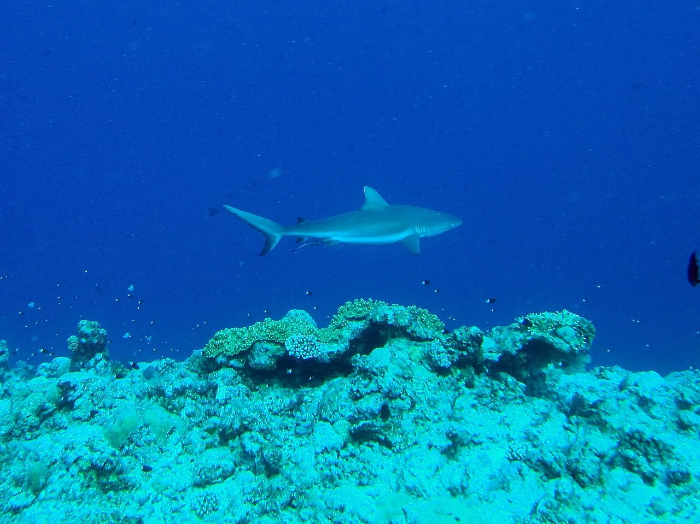

Blue Corner
Palaos · plongée

Pointe de récif où l’on s’accroche au tombant pour observer requins et bancs de poissons dans le courant.
- Lieu
- Palaos
- Niveau
- Expert
- Activités
- plongée
- Type d'eau
- Mer / océan
- Coordonnées
- 7.13, 134.22 (position approximative du secteur)
Dangers à connaître
- Courant très fort.
- Tombant profond.
Le conseil d'Ocean Buddy
Suis ton guide et le briefing du centre.
Ouvrir dans Ocean Buddy Télécharger sur l'App Store
Source : Fiche Ocean Buddy · septembre 2026 · à vérifier localement.